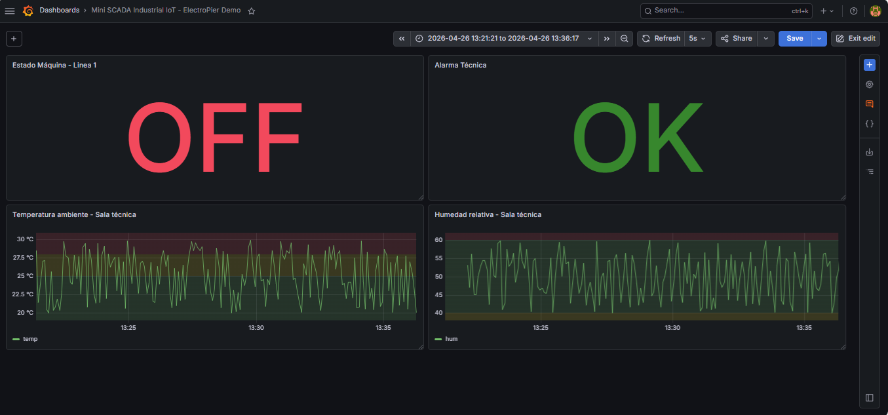
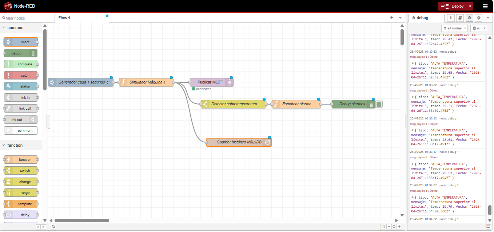
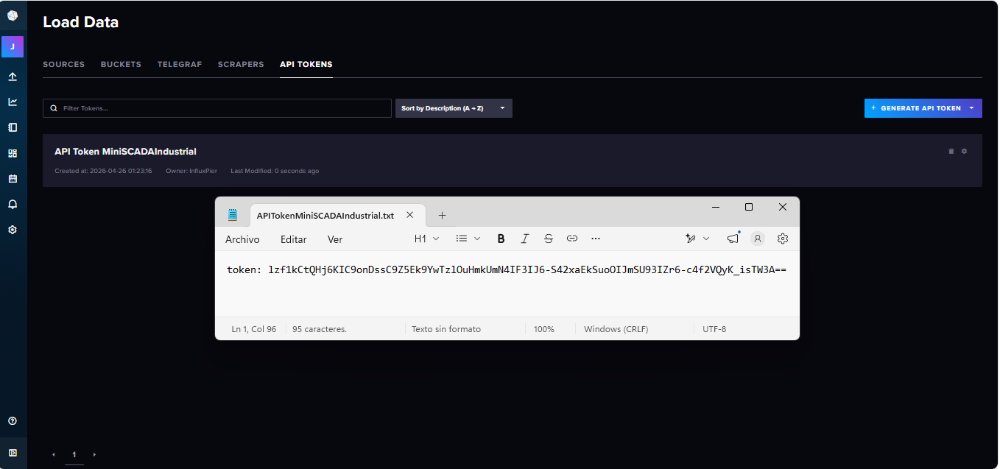

Temperatura
Variable principal para control ambiental y alarmas térmicas.
Proyecto IIoT / SCADA / Datos industriales
Plataforma de supervisión industrial con simulación de datos, publicación MQTT, almacenamiento histórico, alarmas y visualización en Grafana.
Este proyecto implementa un Mini SCADA industrial 100% virtual para supervisar una máquina simulada en tiempo real. El sistema genera variables de proceso, detecta alarmas, almacena históricos y muestra el estado de la instalación mediante un dashboard industrial.
En una planta industrial es fundamental registrar variables del proceso, visualizar tendencias y detectar condiciones anómalas antes de que afecten a la producción, seguridad o mantenimiento.
Esta solución demuestra cómo implementar una arquitectura ligera y escalable de supervisión usando herramientas abiertas.
Node-RED Simulator → MQTT → InfluxDB → Grafana
La arquitectura está preparada para sustituir el simulador por un dispositivo real, como un ESP32 con sensor DHT22, sin modificar el resto del sistema.
Variable principal para control ambiental y alarmas térmicas.
Seguimiento ambiental para salas técnicas o zonas de producción.
Representación ON/OFF de la línea o activo supervisado.
Activación automática por sobretemperatura.
Dashboard en tiempo real con variables simuladas y arquitectura escalable preparada para integración con ESP32.


